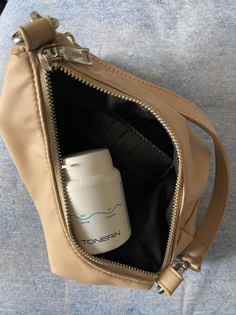

Advertorial
ZAKÁZANÝ OBJEV: Umělé červené krvinky mohou regulovat krevní tlak, posílit krevní cévy a zvýšit imunitu!
Při natáčení dalšího dílu stála se nečekaná situace, která ohromila největších "znalců" medicíny. Jeden z pozvaných odborníků najednou začal mluvit ne podle scénáře. Svým projevem překvapil diváky ve studiu. Ale hlavně to vyděsilo zdravotnické úředníky.
Specialista na kardiochirurgii otevřeně prohlásil: "Jen házíte do pořadu informace o viru, ale zavíráte oči před problémem, který ročně připraví o život miliony lidí po celém světě. Proč nikdo nemluví o onemocněních kardiovaskulárního systému? Proč všichni mlčíte, že už existuje prostředek, který pomáhá stabilizovat tlak?»
Tlak! To je hlavní vrah lidí. Nejen v Evropě, ale i ve světě. A vy všichni vypadáte, kdyby vše bylo v pořádku Nevšímáte si pokročilých prostředků, které pomáhají vyřešit problém.
Kardiovaskulární onemocnění jsou na prvním místě mezi nemocemi podle počtu životů, které berou. 94% infarktů a mrtvice se vyskytuje kvůli zvýšenému tlaku. V 89% případů hypertenze při infarktu a mrtvici končí smrtí. Pokud mluvíme o konkrétních číslech, hypertenze je příčinou přibližně 77-78% "přirozených" úmrtí. V absolutních číslech je to asi 1,5 milionu životů v roce , a vy cpete do hlavy nesmysly a zavádíte neuvěřitelná opatření, která jsou nyní k ničemu.
Lidé netrpí virem, ale opotřebovaným srdcem a cévami! Zapamatujte si to jednou provždy! " tvrdil Vilém Sedláček, jeden z pozvaných odborníků, ale ostatní účastníci se na něj doslova vrhli a nedovolili mu pokračovat dále.
Odhaduje se, že hypertoniků je 1,28 miliardy dospělých ve věku 30-79 let po
celém světě, z nich většina (dvě třetiny) žije v zemích s
nízkými a středními příjmy.
Odhaduje se, že 46%
dospělých s hypertenzí nevědí o tom, že trpí patologií.
A nejzábavnější a nejsmutnější je, že 99,87% závažných případů virových infekcí jsou lidé s cévními problémy! S tlakem. Se srdcem. Neměli by tyto problémy, vše by snášeli prakticky bez povšimnutí. A tak je to hlavní riziková skupina. A opět o tom nikdo nemluví, protože okamžitě vyvstane otázka – a co děláte pro udržení zdraví cév a srdce lidí?
Ve studiu všichni byli zmatení. Odborníci se začali hádat a navzájem se přerušovali. Pořád rychle zastavili a rychle pustili reklamu. Vilém Sedláček nevydržel a odešel ze studia.
Diváci si tento incident dlouho pamatovali.
Rozhodli jsme se zahájit šetření a domluvit se s Vilémem Sedláčkem, aby nám poskytl samostatný rozhovor.
Na vaše otázky odpovídá: Vilém Sedláček
Znamý odborník v oblasti kardiologie, autor desítek vědeckých článků na téma onemocnění srdce, vědec, účastník vývoje moderních prostředků pro stabilizaci tlaku a boje s jinými poruchami srdce a cév. Často se zúčastní přednášek na známých intsitutech v USA. Pracovní zkušenosti je 48 let
Korespondent: "Pane Sedláčku, o skandálu v televizi vědí asi všichni vaši kolegové. Proč jste se takového činu nebál?»
Sedláček: Chápal jsem všechna rizika, ale už jsem nemohl mlčet. Nechtěl jsem jen mluvit furt to stejné a nenabízet konkrétní řešení.
A jsem moc rád, že jste mě znovu kontaktoval, protože mohu zopakovat svá slova. Pandemie bude brzo pryč, svět to přežije jako každá epidemie před tím. Ale virus chamtivosti a prodejnosti s námi zůstane navždy. Z tohoto viru vakcína ještě nebyla vynalezena.
Korespondent: "O čem konkrétně mluvíte?"
Sedláček: Že existují patologie, se kterými se u nás běžně bojovat nedá. Pracuji s kardiovaskulárními chorobami, zabývám se rehabilitací lidí, kteří jsou po infarktu a mrtvici. A v mém oboru je podvod všude.
Jsem si jistý, že také v oblasti muskuloskeletálního aparátu, gastrointestinálního traktu, ano, v jakékoli oblasti v podstatě jen ulehčují stav, ale nevracejí plné zdraví.
A na vině jsou farmaceutické korporace a jejich zástupci, kteří uplácejí odborníky ve všech zemích Evropy. A teď, když z každé žehličky strach virus-pro firmy je to obecně výhra. Můžete prodávat testy, dezinfekční prostředky, různé prostředky. A v případě smrtelnosti svést vše na epidemii. Vidím to všechno a je mi zle.
Nemáme správný algoritmus pro boj s kardiovaskulárními poruchami
Moderátor: "Takže říkáte, že všechny moderní prostředky pro normalizaci tlaku nejsou účinné?"
Sedláček: Prostředky na tlak, které lidem oficiálně předepisují, plní jednu důležitou funkci - pumpují peníze z kapes nemocných do kapes lékařské mafie.
Jsou to legální drogy. Posuďte sami. Pacient bere pilulku, jeho stav se zlepšuje. Účinek prostředku se zastaví a tlak opět roste. Tak fungují všechny drogy. Chcete-li se cítit dobře, musíte hledat novou "dávku".
Hlavní věc je pochopit, že: v nouzových situacích jsou" chemické " prostředky potřebné a důležité. Zachraňují životy, když potřebujete naléhavou pomoc. V první světové válce se například na bojišti používal heroin, aby ranění neumírali na bolestivý šok.
Ale pokud neustále berete pilulky, zničí tělo. Stejně jako heroin. Ne tak rychle, ale učinek je stejný. A abyste se zbavili vedlejších účinků, budete kupovat další tablety. A znovu . A znovu . Čím více, tím lépe pro lékárny a farmakologický byznys.
Moderátor: "Ale vždyť lidé žijí roky na takových prostředcích!"
Sedláček: Narkomani také mohou žít poměrně dlouho. Ale co je to za život?
Když bolí klouby. Když ne staří muži, trochu nad 50, už trpí prostatitidou a ztrácejí potenci. Když ledviny přestanou fungovat a objeví se otoky. Jako první zpravidla otékají nohy, natolik, že je těžké chodit. Pak vnitřní orgány. Natolik, že břicho vypadá jako sud.
Některé tablety po dlouhém příjmu se dokonce stávají onkogenní. Podívejte se na statistiky rakoviny – tady je skutečná epidemie.
Už nemluvím o takových maličkostech, jako jsou problémy se spánkem, tinnitus, ztráta zraku a sluchu. Seznam může být dlouhý. A důvod je jeden-opotřebované špinavé cévy, které nikdo nečistí. I když prostředek již existuje a vykazuje vynikající výsledky.
Korespondent: "Při natáčení pořádu jste se snažil vyprávět o průlomovém prostředku na terapii tlaku a cév, ale doslova vás neposlouchali. Co je to za prostředek? Proč zástupci lékáren reagují na jeho jméno stejně jako upíři na slunce?"
Sedláček: Začal jsem mluvit o . Jedná se o komplexní kúru pro kontrolu tlaku, čištění cév, ochranu srdce a zachování aktivity starších lidí.
je vývoj Evropského centra molekulární biologie. Prostředek je také často nazývány "umělé červené krvinky". Protože stimuluje tvorbu mladých červených krvinek, které se zabývají čištěním a "opravou" cév.
přispívá k čištění cév a stabilizaci tlaku po celá léta. Nemusí být užíván neustále.
Za vývoj tohoto nástroje získal tým našich vědců mezinárodní cenu za terapeutickou biologii. Pro inovativní průlom v eliminaci vaskulárních patologií.
Zdá se, že po takovém uznání by lékárny měly chtít získat právo na prodej . Měli by tento produkt převzít. Ale ne, vůbec, všichni mlčí. Nikdo jako by si nevšiml průlomu.
A zástupci lékařského byznysu se k droze chovají nenávistně. Mají stovky položek prostředků, plány prodeje a tržeb. A jeden tyto plány nesplní. Lidé po jeho přijetí někdy zapomínají na cestu do soukromé lékárny.
Proto taková nenávist k prostředku . Není možné říct o tom něco špatného. Vždýť existuje mezinárodní uznání, certifikáty, vědecké články, tisíce spokojených pacientů. Proto byla zvolena strategie bojkotu. Předstírat, že neexistuje. A když jsem o něm začal mluvit v pořádu, vyvolalo to neskrývanou agresi.
Spuštění autoregenerace těla
Sedláček: Hlavním cílem je obnovení cév. To je základ, na kterém stojí vaše zdraví.
pomáhá obnovit krevní cévy ve 3 krocích:
- Odstraňuje plaky cholesterolu.
- "Opravuje" poškození stěn cév.
- Zlepšuje vodivost nervových impulzů z mozku.
Obnovení průtoku krve a posílení stěn cév spouští řetězovou reakci na obnovu těla. Spustí se skrytá imunitní síla a tělo se začne obnovovat samo.
Tento proces samoléčby se nazývá autoregenerace. Tyto mechanismy jsou založeny přírodou a je katalyzátor, klíč, který "nastartuje" autoregeneraci.
Zlepšení zdravotního stavu doma je možné!
Moderátor: "co můžete získat po kúře s ?"
1. Tlak jako u kosmonautů
Za prvé, pomáhá stabilizovat tlak a dlouho zapomenout na problém, aniž by se k němu vrátil několik let. Po pravidelném užívání se obvykle obnovuje vaskulární síť těla. Cévy se stávají pružnými a pevnými. Jinými slovy, cévy ožívají a bez problémů "tlumí" kolísání krevního tlaku. Ať už kvůli nervům nebo kvůli fyzické zátěži - aktualizované cévy kompenzují jakýkoli pokles a udržují stabilní tlak 120 na 80.
2. Zlepšení fungování mozku.
Po průběhu se může zlepšit krevní oběh mozku.
Pacienti s nadšením poukazují na to, že poznamenali:
- Zlepšení pamětí.
- Normalizace spánku, letargie a slabost zmizí.
- Zmizí tinnitus.
- Zmizí bolesti hlavy.
3. Zlepšení zrakové ostrosti, obnovení rohovky.
čistí nejen velké cévy a tepny, ale i nejmenší kapiláry. Těch je v očích obzvláště mnoho. To vede k obnově retinálních buněk a zlepšení svalového tónu očí.
- Zlepšuje zrakovou ostrost od 0.5 do 2.1 jednotek.
- Zpravidla se normalizuje oční tlak.
- Příznaky katarakty se mohou snížit.
4. Odstranění otoku.
Správná funkce ledvin a metabolismus tekutin v těle se obnoví. Ledviny přestanou zadržovat vodu a odpadá nutnost užívat diuretika.
- Přestanou bolet i oteklé nohy.
- Břicho se zmenšuje, protože otoky orgánů jsou pryč.
- Tekutina uniká z plic, díky čemuž se snadnějí dýcháte.
5. Hemoroidy a prostatitida už nebudou obtěžovat
Nejčastější nemoci kvůli cévám:
- Křečové žíly.
- Hemoroidy.
- Prostatitida.
- Impotence.
6. Obnovení srdce.
Čištění aorty má příznivý účinek na tón srdečního svalu. V 93% případů tachykardie zmizí, v 99% je vyléčena ischemie.
- Normalizuje se srdeční frekvenci a puls.
- Bolest v srdci zmizí.
- Sedmnáctkrát snižuje riziko infarktu.
7. Zlepšení výkonu imunity.
Zlepšuje se prokrvení kostní dřeně, která se zabývá výrobou imunitních buněk. To vede ke zvýšení obranyschopnosti těla.
Imunita je ochráncem nejen před viry. Hlavní funkcí silné imunity je ochrana před rakovinnými buňkami. Silná imunita včas rozpozná a zničí rakovinné buňky. Neumožňuje vznik plnohodnotného nádoru.
Imunita, která funguje alespoň na 50%, je již nepřekonatelnou překážkou pro viry. A to je dnes také velmi důležité.
Předseda největší soukromé lékárenské sítě Václav Kopeček zavěsil, když slyšel o
Václav Kopeček, šéf jedné z největších sítí soukromých lékáren v Evropě.
Zavolali jsme známému v celé Evropě vedoucímu sítě soukromých lékáren a chtěli vědět, proč v žádné soukromé lékárně není .
- Václave, Dobrý den! Řekněte mi, prosím, proč soukromé lékárny ignorují ? Slyšel jste o něm?
- Proč tu děláte provokace?? Na takové otázky neodpovídám!!! To není vaše věc!
– Hovor zrušen...
Jak získat
Moderátor: "Po takovém rozhovoru bylo jasné, že v soukromých lékárnách není a nebude. Ale získat ho je přece možné, ne?"
Sedláček: Ano, lze objednat přes internet přímo z továrny.
Korespondent: "Proč můžeme objednat pouze přes internet?"
Sedláček: Je tomu tak ze tří důvodů:
- Záruka kvality. je odeslán přímo z továrny kupujícímu.
- Ochrana před zprostředkovateli. Aby nikdo nemohl vydělat 10-20-30 tisíc na dalším prodeji.
- Rychlé doručení na konkretní adresy.
Získejte právě teď!
Sedláček: Chcete-li získat slevu až 50% na , na programu sociální podpory, klikněte na libovolnou krabici níže a otevřete slevu.
Čas konání akce z do (včetně)! Po skončení akce bude možné prostředek objednat pouze za plnou cenu.
POZOR: V rámci akce od distributora až po (včetně), lze získat s 50% slevou za . Počet balíčků v akci je omezen.

Diskuse

Tomáš Honza, Plzeň
Objednala jsem to v akci, získala jsem slevu 50%, bylo to za pár korun! Přivezli mi to druhý den kurýrem. Měla jsem velmi vysoký tlak. Teď už je všechno v pořádku, dodnes tomu nevěřím.

Světlana Pelikánová, Liberec
Já bych všechny ministry rozehnala, neustále lžou, a sledují jen úředníkům, kteří jim platí prachy!! Obdivuji odvahu tohoto lékaře, ale myslím si, že kariéru už mít už nebude.
Andrea Šípová, Rakovník
Nebýt vás, nikdy bych se o
nedozvěděla. A za pár let bych
tu mezi vámi určitě nebyl. Viděli byste mě dřív...
Zásilka mi
přišla velmi rychle.
nyní máme vždy v lékárničce.

Julius Grund, Jablonec
Léta jsem trpěl hypertenzí, docházelo ke ztrátám vědomí, v práci už všichni si na to zvyklí. Pokud dojde ke změnám počasí - objeví se tlak, stres a je to konec, najednou nemám síl. V noci jsem vždy měl tachykardii. Lékaři neustále strašili, že existuje riziko mrtvice, protože cévy nemohou odolat takovým skokům. Bylo to velmi děsivé, protože moje manželka zemřela na mrtvici. O jsem se dozvěděl náhodou, narazil jsem na zmínku v článku a rozhodl jsem se to zkusit. Je to už několik měsíců, co jsem zapomněl na slabost a skoky tlaku. Cítím se veselý a jako bych byl ještě mladší. Doporučuji všem!

Štefan Mazur, Brno
Když jsem začal užívat , ani jsem si nepředstavoval, že efekt bude takový. Zmizely bolesti hlavy (závratě), dušnost zmizela, všechny příznaky zmizely. A teď, v 53 letech cítím se lépe, než mnoho 30letých. Děkuji vám za to, že lidem otevíráte oči a říkáte jim o problému. Od běžného odborníka to neuslyšíte.

Maxim Ulrich, Olomouc
Nedávno jsem sledoval v televizi pořad o hypertonicích. Povídali tam právě o tomto prostředku, chlubili se, že jsme vytvořili nejlepší nástroj na světě na čištění cév. Myslím, že tam byl i nějaký ministr.

Jarmila Kočvarová, Jihlava
Také jsem si objednala, stihla i v akci. Slíbili mi, že do 2 dnů už mi to doručí, řekli, že vše bude zdarma, těším se!
Aneta Hýblová, Cheb
Dlouho jsem trpěl bolestmi hlavy. Měl jsem skoky tlaku, absolvoval jsem týdenní kúru tohoto prostředku, všechno je pryč. Děkuju!

Karina Pazderková, Plzeň
Dlouho jsem přemýšlela o čištění cév, nemohla jsem najít normální prostředek. Je nějak důstojné a ještě to Sedláček doporučuje. Věřím mu, je to člověk, kterého si vážím.

Karolína Gabčiková, Znojmo
Není to podvod? Proč inzerují na internetu?
Radka Košťálová, Průhonice
Také mohu jen doporučit. Když jsem to začal brát - v prvních dnech
už jsem cítil výsledek. Radím
všem.
Josef Bolek, Kladno
Kláro, četla jste vůbec tento článek? Na internetu je všechno, protože v lékárnách jsou samotné zlodějové a chtějí jen vydělat peníze! A co může být rozvod, pokud platba probíhá až po obdržení, a dokonce i za akční cenu? Objednal jsem si to-přišlo mi to poštou, všechno jsem zkontroloval, podíval se a pak si to vzal. A na internetu je nyní všechno-od oblečení a obuvi až po techniku a nábytek.

Štefan Slíva, Přibrám
Brali jsme ho s manželkou a oba jsme měli výrazné zlepšení zdravotního stavu. Opravdu, jako bychom omládli, máme více síly a touhy. Tlak se vrátil do normálu. Už žádné bolesti hlavy. Děkuji moc!

Lýdie Skalková, Bečov
Tři měsíce jsem strávila pod dohledem odborníků. A nic mi nepomohlo. Furt mi cpali nějaký populární prostředek. Brala jsem ho ještě půl roku. Pak jsem viděla v televizi pořád, doporučili tam ! Ježíš, je to kouzelný prostředek. Už rok nemám příznaky hypertenze. Brala jsem jen měsíc. Díky výrobci! Opravdu.


Marina Bianco, Praha
Objednala jsem rodičům ještě před akcemi. Mají hypertenzi. Je to bomba! Již v prvních dnech přestali brát lékárenské prostředky a otravovat své tělo! Tlak se vrátil do normálu. Nyní doporučuji !
